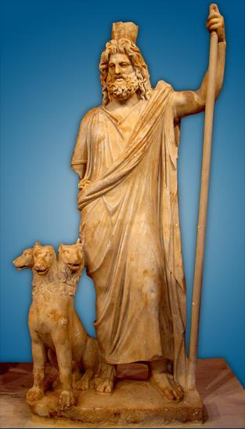
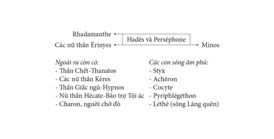

Hadès, người anh của Zeus, theo sự rút thăm chia phần, được cai quản thế giới sâu thẳm trong lòng đất và những vong hồn. So với bầu trời mà Zeus cai quản, với Đại dương mà Poséidon trị vì, thì vương quốc của Hadès thật tối tăm lạnh lẽo. Nơi đây không một tia nắng lọt vào, không một ánh trăng soi tới, không có cuộc sống tưng bừng, náo nức, ấm cúng, nhộn nhịp của thế giới Olympe và thế giới loài người trên mặt đất phì nhiêu. Những người trần thế đoản mệnh khi kết thúc số mệnh của mình đều biến thành những hình bóng vật vờ đi vào vực thẳm sâu hun hút dẫn tới lòng đất. Những bóng hình ấy phải đi qua con sông Styx nước đục, bùn lầy, quanh năm lạnh buốt. Xưa kia, Styx là một tiên nữ Nymphe, con của thần Okéanos, sống trong một cái động đẹp đẽ ở vùng Arcadie, bên một suối nước trong veo.

Thần âm phủ Hađex và chó 3 đầu
Khi những người Đại khổng lồ-Gigantos nổi dậy chống lại thế giới Olympe, Styx theo cha đứng về phe thần Zeus. Dẹp xong vụ bạo loạn, để khen thưởng công lao của Styx, thần Zeus ban cho Styx một đặc ân trở thành một con sông hết sức thiêng liêng đối với thế giới thần linh và những người trần, con sông ở dưới âm phủ. Từ đó trở đi những người trần thế khi từ giã mặt đất tràn đầy ánh sáng để bước vào vương quốc tối tăm của thần Hadès đều phải đi qua con sông Styx. Các vị thần khi đứng trước một sự việc hệ trọng cần phải thề nguyền, cam kết, đều phải viện dẫn sông Styx ra để làm người chứng giám. Nhưng làm sao con sông Styx dưới âm phủ lại có thể hiện diện ở thế giới Olympe để chứng giám cho lời thề nguyền của một vị thần nào đó? Nữ thần Iris sẽ lo toan chu tất việc này. Mỗi khi có việc thề nguyền, được biết trước, nữ thần Cầu vồng-Iris bằng đôi cánh nhanh nhẹn và nhiều màu sắc của mình, sẽ bay ngay xuống thế giới âm phủ múc về một cốc nước sông Styx, và trước cốc nước thiêng liêng này, vị thần đưa tay ra trước mặt, trịnh trọng nói lên lời cam kết, thề nguyền của mình. Được nhận sứ mạng thiêng liêng chứng giám lời thề, Styx có quyền trừng phạt kẻ không tôn trọng lời thề, không thực hiện đúng lời cam kết. Vị thần nào phạm tội xấu xa đó sẽ bị phạt một năm ròng không được uống rượu thánh và ăn các thức ăn thần, nghĩa là những thức ăn vốn dành riêng cho các vị thần để nuôi sống bản chất bất tử trong con người các vị. Không ăn một năm, tất nhiên vị thần nào đó bị trừng phạt, sẽ chết một năm, nghĩa là ngủ một giấc say như chết một năm. Nhưng không phải chỉ có thế, hình phạt như thế thì quá nhẹ. Kẻ phạm tội còn phải chịu tiếp một hình phạt nữa: bị cấm, bị “đình chỉ” không cho dự các cuộc họp của thế giới thần thánh suốt chín năm liền.
Thế giới âm phủ không phải chỉ có một con sông Styx. Các vong hồn còn phải đi qua những con sông khác nữa, như Achéron, Cocyte, Pyriphlégéthon, Léthé. Chúng ta không thấy người xưa kể lại rõ ràng về chặng đường mà các vong hồn đi xuống thế giới âm phủ sẽ phải qua con sông nào trước, con sông nào sau, và con sông nào là ở cuối của đoạn đường tối tăm u ám đó.
Achéron xưa kia vốn là một con sông ở trên trần. Khi các Titan nổi dậy chống lại Zeus, Achéron đã cung cấp nước cho các Titan. Vì tội tiếp tay cho những kẻ phản loạn nên Zeus trừng phạt Achéron đày xuống âm phủ.
Các vong hồn đi xuống thế giới của thần Hadès phải do vị thần Hermès dẫn đường. Khi phải làm công việc không vui gì đó thần Hermès mang tên là Psychopompe70. Hermès Psychopompe dẫn đường cho các vong hồn đến bờ sông Styx hoặc Achéron là xong nhiệm vụ. Một lão già thân hình tiều tụy, đầu bạc, răng long, áo quần rách rưới, nhem nhuốc, vẻ mặt lạnh lùng u ám, lầm lì tên là Charon đứng chờ sẵn bên bờ sông với con đò để đưa tiếp những vong hồn vào vương quốc tối tăm của thần Hadès. Charon vốn là con của Chốn Tối tăm Vĩnh cửu-Érèbe và nữ thần Đêm tối-Nyx. Có thể nói trên đời này ít có con người nào lại khắc nghiệt, cứng rắn, lạnh lùng như lão già chở đò Charon. Mỗi vong hồn qua sông đều phải trả tiền đò cho lão. Không tiền thì không được qua sông, đó là luật lệ bất di bất dịch của lão. Những người trần thế gặp cảnh ngộ không may khi từ giã cõi đời không có thân nhân làm đầy đủ nghi lễ mai táng, trong đó có việc phải bỏ vào miệng người chết một đồng tiền, thì thật là bất hạnh. Vong hồn đó không qua được sông Styx hoặc Achéron, suốt đời cứ phải đứng bên này bờ sông than khóc cho số phận hẩm hiu, bạc bẽo của mình, lang thang không nơi trú ngụ hết năm này qua năm khác, chờ đợi sự phán quyết của các quan tòa dưới âm phủ về số phận của mình. Có người lại kể hơi khác đi một chút, những vong hồn bất hạnh đó chờ đợi ở bên bờ sông Cocyte chứ không phải sông Achéron. Đi vào vương quốc của thần Hadès, các vong hồn còn phải đến sông Léthé để uống một ngụm nước của con sông này cho quên đi tất cả mọi chuyện của cuộc sống ở dương gian trước kia, mọi nỗi sướng vui và mọi niềm đau khổ, mọi kỷ niệm đối với những người thân thích trong đời sống hàng ngày của mình. Không khí ở âm phủ lạnh lẽo đến ghê rợn. Bóng đen mờ mờ, ảo ảo của những vong hồn vật vờ như những làn khói xám. Tiếng rên rỉ khóc than của họ về số phận bất hạnh của mình cất lên đều đều, rả rích, buồn bã nhưng trầm trầm, nho nhỏ nghe như tiếng lá cây xào xạc hay tiếng các loại côn trùng kể lể rỉ rót trong đêm. Đã bước chân xuống con đò của lão Charon ác nghiệt để đi sang bờ bên kia của con sông Achéron thì không còn cách gì trở lại được nữa. Lão già lái đò tính khí khắt khe và chặt chẽ, không cho ai qua đò nếu không có tiền, lại càng không cho ai qua đò rồi xin trở lại. Gác cửa âm phủ có con chó ba đầu Cerbère vô cùng dữ tợn. Cổ nó có một búi rắn quấn quanh, đầu rắn lúc nào cũng ngóc lên tua tủa. Răng chó Cerbère dài và nhọn hoắt lại có nọc độc như nọc rắn. Nó để cho các vong hồn đi qua cửa vào âm cung một cách dễ dàng nhưng nếu từ âm cung mà trở ra thì đừng hòng qua khỏi ba đầu, sáu mắt của nó. Những người trần thế, các vị thần, xuống âm cung đều bị Cerbère chặn lại. Tất nhiên đối với các vị anh hùng và các đấng thần linh thì thế nào họ cũng tìm được cách qua cửa ải Cerbère, hoặc là dùng mưu, hoặc là dùng sức. Nàng Psyché xinh đẹp tuyệt trần phải cho Cerbère cái bánh, chàng Orphée gẩy đàn lia cho chó Cerbère nghe, người anh hùng Héraclès thì dùng sức mạnh của đôi tay tóm cổ Cerbère buộc dây lại dắt lên trần... Không rõ Psyché, Orphée làm thế nào để cho lão già Charon cho xuống đò. Nhưng với Héraclès thì khi nhìn thấy nắm đấm của chàng giơ ra trước mặt là lão già mời chàng xuống đò ngay, không hề hỏi han tí gì đến tiền đò cả. Do việc sơ hở này, để một người trần, một người trần còn sống vào tận âm phủ, trái hẳn với luật lệ của thế giới địa ngục vốn chỉ cho phép những vong hồn được vào, lão già Charon bị trừng phạt, bị “thi hành kỷ luật”, “đình chỉ công tác” chở đò một năm! Xem thế thì vương quốc của thần Hadès cũng có phép tắc lề luật nghiêm minh đấy chứ!
Thần Hadès trị vì ở thế giới âm ty, địa ngục, một vương quốc buồn thảm và không hề biết đến ánh sáng mặt trăng, mặt trời. Hadès ngồi trên ngai vàng uy nghiêm tay cầm cây vương trượng, biểu trưng của quyền lực trị vì thế giới của mình. Ngồi bên Hadès là Perséphone, một nữ thần có nhan sắc ít người sánh kịp mà Hadès đã bắt từ dương gian về làm vợ. Hadès đội trên đầu chiếc mũ tàng hình, tặng vật của những người khổng lồ Cyclopes xưa kia ban cho thần trong cuộc giao tranh với những Titan, Hadès đã từng cho một vài vị anh hùng mượn chiếc mũ quý báu đó để họ lập nên những chiến công lưu danh muôn thuở. Giúp việc cai quản thế giới vong hồn cho Hadès còn có nhiều vị thần và hai vị quan tòa nổi tiếng công minh, chính trực, đó là Minos và Rhadamanthe. Các nữ thần Érinyes tính tình khắc nghiệt, tóc là những mớ rắn độc ngoằn ngoèo, tay cầm roi, tay cầm đuốc chỉ chờ lệnh của Hadès là với đôi tay nhanh nhẹn bay lên dương gian truy lùng, hành hạ những kẻ phạm tội bằng sự giày vò, ăn năn, bứt rứt, hối hận của lương tâm. Những kẻ phạm tội dù có trốn đi bất cứ nơi đâu cũng không thoát khỏi sự truy lùng và đòn trừng phạt của những nữ thần Érinyes. Họ suốt ngày đêm không được yên nghỉ, suốt ngày đêm lo lắng, bồn chồn, dằn vặt, khắc khoải. Còn ở dưới âm phủ, các nữ thần Érinyes trừng phạt những vong hồn phạm tội sát nhân, bội bạc, bất nghĩa bất nhân bằng những ngọn roi đau buốt, các nữ thần Érinyes thực hiện công lý của thế giới âm phủ. Các nữ thần tra hỏi, bắt các vong hồn phải đau đớn, xót xa trước những lời sỉ nhục, mắng nhiếc của mình. Thần Chết-Thanatos tay cầm gươm, mặc áo khoác đen với đôi cánh đen rộng và dài, thường có mặt ngay sau khi một người trần thế nào đó vừa tắt thở. Thanatos dùng gươm cạo tóc, khoét đầu để hút linh hồn. Các nữ thần Kères luôn luôn có mặt ở bãi chiến trường nơi các anh hùng, dũng sĩ phơi thây ngổn ngang. Cảnh tượng đó đối với người trần chúng ta thật là khủng khiếp nhưng với các nữ thần Kères thì là những bữa đại tiệc. Từ dưới âm phủ, họ với đôi cánh đen nặng nề bay đến chiến địa bám vào những vết thương say sưa uống hút chút máu nóng còn lại trong các thi hài tử sĩ. Và linh hồn những người tử trận còn chút nào đều bị các nữ thần kéo, hút ra khỏi thể xác. Thần Giấc ngủ hoặc Giấc mơ-Hypnos cũng phục vụ dưới trướng Hadès. Tuy chẳng có quyền lực lớn lao song ngay đến thần Zeus cũng không thể đối địch lại với Hypnos. Chỉ với một vài cử động nhẹ nhàng, cầm bông hoa anh túc (le pavot: thuốc phiện) phất khẽ trên mặt người nào đó vài cái hoặc lấy chút thuốc bột anh túc từ trong một chiếc sừng ra rắc xuống, thế là bất kể ai từ thần thánh cho đến người trần đều thấy nặng trĩu trên mi mắt và mi mắt từ từ khép lại. Người ta bảo thần Hypnos đã khâu nối hai mi mắt con người lại. Người xưa hình dung thần Hypnos là một chàng trai xinh đẹp có cánh ở thái dương, tay cầm một chiếc sừng và một bông hoa anh túc. Có khi trên những quan tài bằng đá, người ta thể hiện thần Hypnos là một chàng trai đang ngủ, cánh tay tì trên một ngọn đèn bị đổ.
Vương quốc của thần Hadès tối tăm và quả là có nhiều vị thần rất đáng sợ. Chẳng ai là người ưa thích, quý mến cái thế giới không có ánh sáng và đầy rẫy những vị thần, những giống vật khủng khiếp như thế cả. Nhưng có lẽ ghê sợ hơn cả, khủng khiếp hơn cả là nữ thần Hécate và lũ ma quỷ tùy tùng của mụ. Nữ thần Hécate là con của Titan Persès và Titanide Astéria. Đó là một nữ thần có ba đầu, cai quản các quái vật, ma quỷ, các giấc mơ giấc mộng khủng khiếp của thế giới âm phủ. Nữ thần thường xuất hiện trên dương gian vào những đêm sao lu trăng lạnh, đi lang thang trong các bãi tha ma, những khu mộ địa hoặc đứng vơ vẩn ở các ngã ba, ngã tư đường. Theo sau mụ là những bóng ma vật vờ và những con chó. Chúng thường la hú, hoặc rít lên nghe rất ghê rợn. Đứng ở ngã ba đường, Hécate thường gieo rắc cho khách bộ hành sự khủng khiếp bằng những lời tiên đoán ma quái, nguyền rủa. Người trần sợ hãi Hécate thường dựng tượng vị nữ thần này ở ngã ba, ngã tư đường và giết chó để làm lễ hiến tế, cầu nguyện. Có nơi hình dung Hécate là một nữ thần tượng trưng cho ba nữ thần Perséphone, Séléné, Artémis. Có nơi dựng tượng Hécate như một nữ thần ba đầu, sáu tay, khi cầm đuốc, cầm gươm, cầm dao găm, cầm chìa khóa, có chó và rắn đi hộ tống. Người xưa coi Hécate là vị nữ thần thủy tổ của nghề phù thủy, ma thuật, bùa ngải, phù chú. Và sau dần, Hécate được xem như là một vị nữ thần bảo trợ cho tội ác hoặc xúi giục con người làm điều ác.
Lại có chuyện kể Hécate là con của thần Zeus và nữ thần Héra hoặc nữ thần Déméter. Có người còn nói Hécate là con của thần Hadès. Các nhà nghiên cứu cho chúng ta biết, nguyên quán đích thực của Hécate là từ phương Đông sau này mới chuyển đi dần vào gia đình thần thoại Hy Lạp. Lúc đầu Hécate là vị nữ thần đem lại cho con người những phúc lợi của nghề đánh cá, săn bắt muông thú, chăn nuôi. Nàng lại còn lo toan cho việc sinh nở của các bà mẹ để cho cuộc sống tăng thêm người, dạy dỗ trẻ thơ cho chúng trở thành những đứa bé ngoan ngoãn, khỏe mạnh. Thuyền bè qua lại trên sông biển có được an toàn, thuận lợi hay không, trong các cuộc thi đấu, tranh đua, kiện cáo con người có giành được thắng lợi hay không, cả đến những cuộc xung đột trên chiến trường, thắng bại cũng đều tùy thuộc vào quyền lực của Hécate.
Ngày nay trong ngôn ngữ văn học, đôi khi Hécate lại mang một ý nghĩa rất đẹp, tượng trưng cho ánh trăng, mặt trăng.
Empousa là con gái của Hécate, có người nói là tùy tùng. Đây là một con ma có bộ chân bằng đồng hoặc chân lừa, sống bằng máu và thịt người. Nó có tài biến hóa ra mọi hình, mọi vẻ để dọa nạt phụ nữ và trẻ em, dọa nạt những người bộ hành. Thường thì nó hay bắt trẻ em để hút máu và ăn thịt. Có khi nó biến thành một thiếu nữ nhan sắc quyến rũ những người đàn ông rồi đêm hôm lừa lúc người đàn ông ngủ say, Empousa bóp cổ chết để hút máu.
Lamia cũng là một con quỷ cái uống máu, ăn thịt trẻ con. Người ta thường cho rằng Lamia với Empousa là một, tuy rằng tên thì hai. Có một chuyện kể rằng xưa kia Lamia là một thiếu nữ vô cùng xinh đẹp, con của nhà vua Bélos. Thần Zeus đem lòng yêu mến. Cuộc tình duyên của họ thắm thiết vô cùng. Họ sinh ra được khá nhiều con cái. Nữ thần Héra, vợ Zeus, không thể chịu đựng được cái cảnh trêu ngươi ấy đã giết hết, giết sạch mọi đứa con của họ. Lamia vì chuyện đó trở nên điên dại, biến mình thành con quỷ cái bắt cóc trẻ thơ, uống máu, ăn thịt để trả thù. Nữ thần Héra căm tức trừng phạt Lamia bằng cách tước đoạt vĩnh viễn giấc ngủ của Lamia. Thần Zeus, không thể bênh vực gì Lamia được nữa, đành phải để cho Lamia hành động như vậy. Âu cũng là một sự an ủi người thiếu nữ xinh đẹp đã phải chịu đựng quá nhiều đau khổ!
Thế giới âm phủ còn có khá nhiều ma quỷ như con Mormo, con Acco (còn gọi là con Mormolyke hay Alphito) và... mà chúng ta không thể kể hết được. Thần Hadès được người xưa tạc tượng là một ông già nghiêm nghị, một tay cầm cái sừng của sự sung túc, một tay cầm nông cụ. Pluton, một tên khác của thần Hadès có nghĩa là “Người phân phối của cải” (Le Dispensateur des richesses), vì thế những người làm nghề nông thường cầu khẩn thần Hadès. Trong một vài tác phẩm điêu khắc cổ đại, Hadès được thể hiện là ông già oai phong lẫm liệt ngồi trên ngai vàng, tay cầm cây vương trượng, chó ngao Cerbère nằm dưới chân.
Trong thần thoại học có khái niệm “thần thoại Chthonien” hoặc “thần thoại Chthoniennes” để chỉ thần thoại thời kỳ thị tộc mẫu quyền, nếu dịch sát nghĩa là “thần thoại đất” (do tiếng Hy Lạp chthon là đất). Con người nguyên thủy sống phụ thuộc rất nhiều vào tự nhiên, vào điều kiện và hoàn cảnh bên ngoài, vì thế, một trong những điều kiện và hoàn cảnh bên ngoài, trực tiếp nhất, gần gụi nhất, dễ thấy nhất là đất. Họ thường cho rằng tất cả đều từ đất mà ra, tất cả đều “sinh cơ lập nghiệp” trên đất, từ đất. Vì thế không phải ngẫu nhiên trước khi thần Zeus ra đời và được thờ cúng thì nữ thần Đất mẹ-Gaia đã là vị thần được thờ cúng phổ biến trên khắp đất nước Hy Lạp. Các nhà nghiên cứu dùng khái niệm thần thoại Chthonien để chỉ một trình độ phát triển của thần thoại còn thô thiển, sơ lược, gồ ghề, ít tính nghệ thuật, dấu vết của sự không hiểu biết và sợ hãi của con người trước tự nhiên còn đậm nét, khác với thần thoại anh hùng và thần thoại của thời kỳ thị tộc phụ quyền tinh tế hơn, nhiều tính nghệ thuật hơn, sức mạnh của con người bộc lộ ra rõ ràng và đã có tính duy lý. Thần thoại Chthonien trải qua nhiều trình độ, từ bái vật giáo71 đến vật linh giáo.
Người ta còn sử dụng thuật ngữ Những vị thần Chthonien (Les dieux chthoniens) để chỉ những vị thần có liên quan đến đất như: Gaia, Hadès, Déméter, Perséphone, Dionysos, Érinyes... hoặc là những vị thần thuộc thế giới âm phủ, hoặc là những vị thần gắn với mùa màng phì nhiêu, cây cỏ. Tuy nhiên thường thì người ta dùng thuật ngữ này để chỉ những vị thần ở dưới âm phủ để đối lập lại với những vị thần ở trên thiên đình (Les dieux célestes).
Gia hệ Hadès

[70] Tiếng Hy Lạp psychopompe: người dẫn đường cho linh hồn.
[71] Thí dụ, ở đền thờ Delphes thờ hòn đá Omphalos, được người xưa coi là cái rốn của vũ trụ. Có truyền thuyết kể rằng đó là hòn đá khi xưa nữ thần Rhéa quấn tã lót vào giả làm Zeus để cho Cronos nuốt; sau này khi Cronus nôn nhả hòn đá đó ra, người ta đem về thờ và coi là rốn của đất Paphos trên đảo Chypre. Nữ thần Aphrodite được thờ bằng hòn đá hình nón. Nữ thần Artémis ở đảo Icarie được thờ bằng một khúc gỗ.